독립 오프라인 실험 / 제품 미적용 / 미술 판정 미통과.
60의 같은 frame94에 원본 UV 색 영역 팔레트를 직접 대입했습니다. 새 Unity 렌더·연속 프레임이 아닙니다. 다른 파츠·실루엣·알파는 보존했습니다.
연산·입력·실패와 한계 · 373셀 수치 · 과거 반례 재검사 · 특징별 실제 RGB8 / Q · native 명도 프로필
왼쪽: 원래 제품 저장 출력. 가운데: 재질당 대표색60의 실제 GPU 출력. 오른쪽: 원본 색 영역62의 오프라인 재합성. 960×544 각 컷을 원래 크기로 나란히 표시합니다.
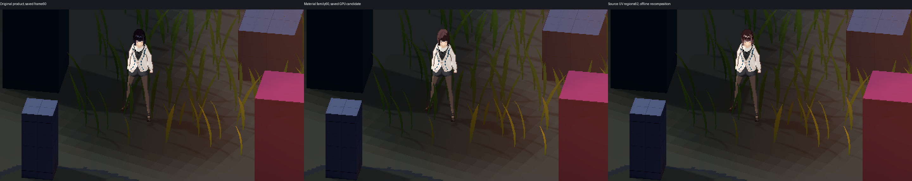
색과 명암을 구분합니다. source 영역은 materialId나 실제 가림 owner와 동일하지 않습니다. 마지막 열은 색이 아닌 영역 ID의 디버그 표시입니다.
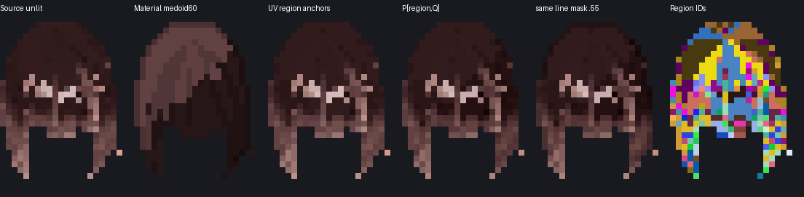
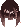
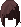
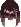
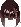
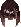
| 같은373셀 | RGB8 | RGB 4연결 영역 | 단독 셀 | L 중앙값 |
|---|---|---|---|---|
| 원본 point | 189 | 287 | 262 | .256064 |
| 재질60 최종 | 9 | 37 | 13 | .339208 |
| 영역62 anchor | 45 | 162 | 117 | .256064 |
| 영역62 P 조회 | 62 | 175 | 132 | .256064 |
| 영역62 동일 선 처리 | 74 | 189 | 144 | .251989 |
원본 무늬는 복구됐지만 작은 색 조각은 여전히 많습니다. 숫자의 감소·원본 중앙값 근접을 미술적 성공으로 해석하지 않습니다. palette 간격 조절은 영역/Q를 바꾸지 않으며 RGB×g나 전체 밝기 맞춤 배율은 없습니다.
이 부분은 다른 sourceId의 이전 프레임입니다. 기존 358 source-known 셀을 동일 범위로 검사하며 정보 없는10셀은 원래 값을 유지합니다. 단독184→136이지만 이전 v3의106보다 많고, 추가 경계도113→140으로 늘어 여전히 미채택입니다.
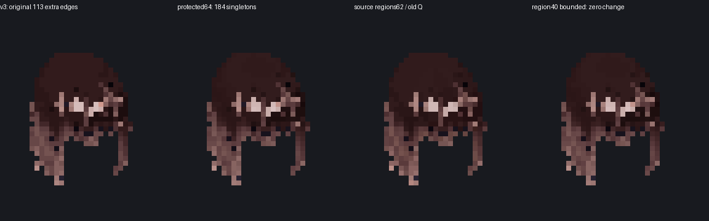
보호7쌍의 색 구분과 방향은 유지했지만 과거 filtered 원본 대비 하한까지 4Q 전부 만족한 것은4쌍입니다. native point와 filtered source 차이를 대비 증폭으로 숨기지 않았습니다. 실패 id3·5·8과 실제 색.
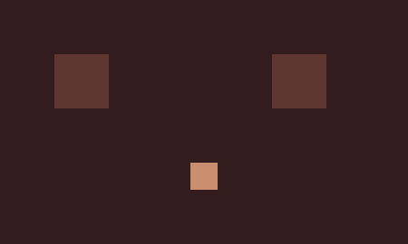
분리된 두 무늬는 별도 UV region ID, 같은 색의 별도 기하는 별도 structure ID로 유지합니다. 팔레트 참조 공유가 실제 가림 owner 병합을 의미하지 않습니다. 1texel 강조는 면적 필터로 삭제하지 않습니다. 이 합성 검사를 전체 실제 특징 검증으로 확대하지 않습니다.
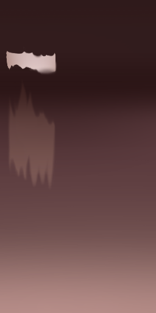
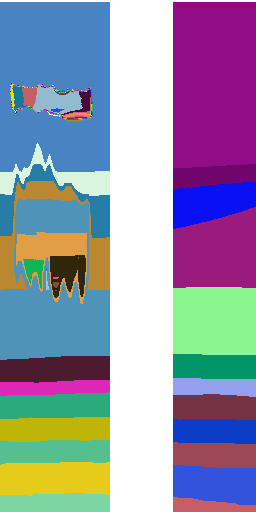
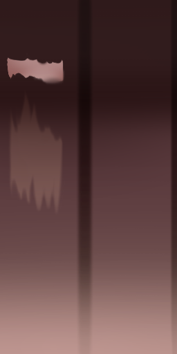
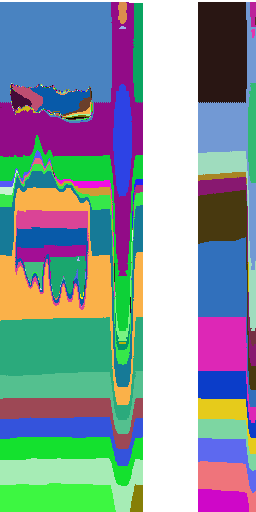
원본 source의 연속 기울기·그려진 무늬·형태를 자동 구별하는 분류는 미완입니다. native3표본이 완만한 기울기와 양립한다는 것은 제거 허가가 아닙니다. GPU/회전/가림/시간 안정성은62에서 시험하지 않았습니다. 기존 global63개의 원래 값은 안전한 회수 핸들이 없으므로 복원 동등성 미증명 상태를 유지합니다.